Das Programm MesoCalc, welches über den Menüpunkt…
1 WinLine INFO
1 Info
1 MesoCalc
… aufgerufen werden kann, ist ein Tool, mit dem Berechnungen anhand von WinLine FIBU- und WinLine KORE-Daten durchgeführt werden können.
Über den Button "Gruppensummen aktualisieren", öffnet sich das Aktualisierungs-Fenster. In diesem Fenster werden die jeweiligen Gruppen mit dem letzten Aktualisierungsdatum aufgelistet und nach Aktivierung der Checkbox neu berechnet. Damit erfolgt die Summierung nicht mehr automatisch. Wahlweise kann auch für alle Wirtschaftsjahre die Summierung der Gruppen vorgenommen werden.
Hinweis 1
Die Summierung erfolgt nur dann automatisch, wenn noch keine Werte in der Gruppe vorhanden sind.
Hinweis 2
Das Programm MesoCalc ist ähnlich aufgebaut wie Excel und bietet im Wesentlichen auch die gleichen Funktionen. Dazu werden noch WinLine spezifische Funktionen angeboten, die noch im Detail erklärt werden.
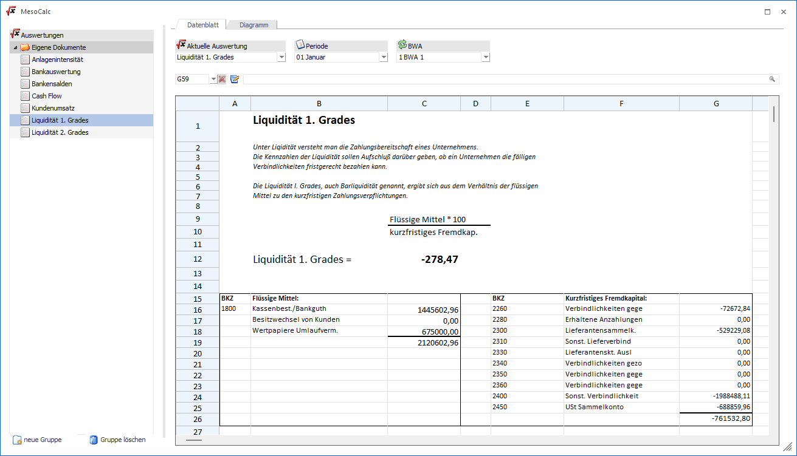
Auf der linken Seite werden alle bereits vorhandenen Auswertungen angezeigt, wobei durch einen Klick auf die gewünschte Auswertung diese gleich geladen wird. Die Breite dieser Anzeige kann durch den Splitter (zwischen angezeigten Auswertungen und Tabelle) verändert und auch gespeichert werden.
Register "Datenblatt"
Im Register Datenblatt werden die Werte bzw. die Funktionen und Texte hinterlegt, die die Basis für die Auswertung darstellen.
Register "Diagramm"
Im Register Diagramm kann eine Grafik angezeigt werden, die auf Basis der Werte erstellt werden kann, wobei dazu sowohl Funktionen auf der rechten Maustaste als auch eigene Buttons zur Verfügung stehen.
Auswahlfelder
Ø Aktuelle Auswertung
Wurden bereits Auswertungen erstellt und gespeichert, kann aus der Auswahllistbox eine bestehende Auswertung ausgewählt und geladen werden.
Im linken Bereich des Fensters werden die Auswertungen in einer Baumstruktur dargestellt und können durch Markieren des Eintrags ebenfalls geladen werden.
Ø Periode
Aus der Auswahlliste kann die aktuelle Auswerteperiode gewählt werden. Dies ist auch die Basis für die Berechnung der Werte.
Ø BWA
Aus der Auswahllistbox kann die BWA gewählt werden, für die die Berechnungen erfolgen soll (sofern BWA`s verwendete werden). Standardmäßig wird hier "0 - keine" vorgeschlagen. Erst wenn aus der Auswahllistbox eine der BWA gewählt wurde, werden die Werte neu eingelesen.
Bearbeitungszeile
Die Bearbeitungszeile bietet einige Möglichkeiten, die das Arbeiten im MesoCalc erleichtern
Ø Bereichsauswahl
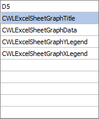
Die Bereichsauswahl hat mehrere Funktionen:
ü Wenn man eine Zelle ausgewählt hat, dann wird hier die aktuelle Zellennummer angezeigt.
ü Wenn man einen Bereich markiert
hat, wird hier die erste Zelle der Markierung angezeigt. Dazu kann dann in der
Auswahllistbox eine Bezeichnung erfasst werden, wodurch dann ein benannter
Bereich erstellt werden. Dabei wird dann auch eine Meldung
angezeigt:
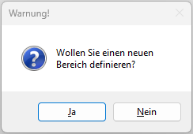
Ø Bereichsauswahl löschen
Mit diesem Button kann ein einmal definierter Bereich auch wieder gelöscht werden.
Ø Funktionen Wizard
Mit diesem Button kann der Funktions-Wizard aufgerufen werden, um entweder eine neue Formel/Funktion zu erstellen, oder die bestehende Formel/Funktion aus der aktiven Zelle zu bearbeiten.
Ø Eingabefeld
Im Eingabefeld wird der Inhalt der aktuellen Zelle angezeigt und kann editiert werden - z.B. durch Anklicken des "Funktionen Wizard"-Button, um die Formel zu überarbeiten. Wenn das Feld leer ist, kann über die Matchcode-Funktion (F9-Taste) eine der Funktionen aus der Auswahllistbox ausgewählt werden, wobei hier dann die entsprechenden Parameter manuell ausgefüllt werden müssen (oder man klickt auf den "Funktionen Wizard"-Button und gelangt wieder in das Funktionen Fenster, wo die Parameter entsprechen ausgewählt werden können).
Tabellenbuttons
Ø
Durch Anwählen dieses Buttons können neue Gruppen hinzugefügt werden. Um den Namen der Gruppe zu ändern, muss dieser angewählt, und der Eintrag "neue Gruppe" überschrieben werden.
Ø
Mit dieser Funktion können bestehende Gruppen gelöscht werden. Sind in einer zu löschenden Gruppe Auswertungen zugeordnet, so werden diese nach Löschen der Gruppe in den Ordner "Eigene Dokumente" verschoben.
Buttons
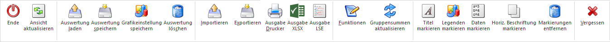
Ø Ende
Wird der Button "Ende" angeklickt oder die ESC-Taste gedrückt, dann wird zuerst folgende Meldung gezeigt:
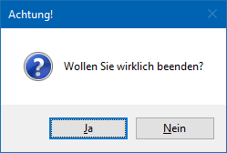
Wird die Meldung mit "Ja" bestätigt, dann wird das Fenster geschlossen und alle durchgeführten Änderungen verworfen. Wird die Meldung hingegen mit "Nein" bestätigt, kann in der aktuellen Auswertungen weitergearbeitet werden.
Ø Ansicht aktualisieren
Durch Anklicken des Buttons "Ansicht aktualisieren" wird die Baumanzeige auf der linken Seite neu sortiert. Die Sortierung erfolgt alphanumerisch.
Ø Auswertung laden
Durch Anklicken des Buttons "Auswertung laden" wird die ausgewählte Auswertung geladen, wobei alle Summen neu gerechnet werden.
Ø Auswertung speichern
Durch Anklicken des Butons "Auswertung speichern" wird die aktuelle Auswertung abgespeichert. Voraussetzung dafür ist, dass im Feld "Auswertung" eine Bezeichnung eingetragen wurde.
Ø Grafikeinstellungen speichern
Mit Hilfe dieses Buttons werden die Grafikeinstellungen gespeichert.
Ø Vergessen
Durch Anklicken des Buttons "Vergessen" werden alle Eingaben - nach einer entsprechenden Sicherheitsabfrage - gelöscht und man fängt wieder bei einer leeren Tabelle an.
Ø Auswertung löschen
Mit dieser Funktion können bestehende Gruppen gelöscht werden. Sind in einer zu löschenden Gruppe Auswertungen zugeordnet, so werden diese nach Löschen der Gruppe in den Ordner "Eigene Dokumente" verschoben.
Ø MesoCalc importieren
Durch Anklicken dieses Buttons wird der Öffnen-Dialog geöffnet, aus dem dann eine Datei aus jedem beliebigen Verzeichnis zum Import ausgewählt werden kann. Es können alle Dateien mit der Erweiterung *.MCS (CWL-Kalkulationsblatt) importiert werden. Alternativ können einzelne Auswertungen mittels Drag & Drop importiert werden.
Ø MesoCalc exportieren
Die Auswertungen, die im MesoCalc erzeugt werden, können auch als "CWL-Kalkulationsblatt" exportiert werden. Das Formular kann dann allerdings nur im MesoCalc wieder importiert werden.
Durch Anklicken des Exportieren-Buttons kann das aktuell geladene Formular in ein beliebiges Verzeichnis exportiert werden, wobei der Name frei vergeben werden kann. Die Dabei bekommt die Erweiterung *.MCS.
Ø Ausgabe Drucker
Durch Anklicken dieses Buttons wird die aktuelle Tabelle ausgedruckt.
Hinweis - Drucken eines selektierten Bereichs
Soll nur ein bestimmter Bereich der Kalkulation ausgedruckt werden, können Sie die gewünschten Felder markieren und mit der rechten Maustaste das Kontextmenü öffnen. Hier steht die Option "Tabelle drucken (Selektion)" zur Verfügung.
Ø Ausgabe XLSX
Mittels Button "Ausgabe XLSX" wird die Auswertung als Excel (*.xlsx) ausgegeben.
Ø Ausgabe WinCalc
Mit Hilfe des Buttons "Ausgabe WinCalc" wird die gewählte Auswertung, inklusive deren Funktionen, an WinCalc übergeben.
Hinweis
Nicht unterstützte Funktionen wie "=TITEL()" werden während der Ausgabe ersetzt.
Ø Ausgabe LSE
Dieser Button steht nur dann zur Verfügung, wenn eine Auswertung geladen ist, die im Namen "Saldenliste" stehen hat. Durch Anklicken des Buttons wird der Windows-Speichern-unter-Dialog geöffnet, der als Ziel das aktuelle Programmverzeichnis und den Dateinamen mit Aufbau "LSE <Mandantennummer>-<WJ>.XML" vorschlägt. Der Speicherort und der Dateiname können individuell angepasst werden. Mit dem Bestätigen des Dialogs wird die Datei entsprechend erstellt und kann dann in weiterer Folge im Portal der Statistik Austria hochgeladen werden.
Ø Funktionen
Durch Anklicken des Buttons "Funktionen" lassen sich Funktionen, die in der WinLine vordefiniert sind, einbauen. Durch einen Assistenten wird man durch die einzelnen Eingaben geführt. Als Ergebnis wird eine Funktion in die Tabelle übernommen.
Ø Gruppensummen aktualisieren
Mit dieser Funktion werden die Summen der einzelnen BKZ und BWA aus dem jeweiligen aktuellen Wirtschaftsjahr neu summiert. In der Auflistung ebenfalls aufgelistet sind Datum und Uhrzeit der letzten Aktualisierung sowie die Buchungsnummer.
Ø Titel markieren
Mit dieser Option wird der markierte Bereich als Titel der Grafik / des Diagramms verwendet.
Ø Legenden markieren
Mit dieser Option wird der markierte Bereich als Beschriftung der Legende verwendet. Im Normalfall wird dass die Bezeichnung der Datenbereiche sein. Hier können max. 10 Einträge angezeigt werden.
Ø Daten markieren
Diese Option wird dann verwendet, wenn der Datenbereich, der Inhalt des Diagramms sein soll, markiert wurde. Das ist auch die Basis für die Ausgabe von Diagrammen. Wenn kein Datenbereich markiert wurde, dann wird auch kein Diagramm angezeigt.
Hinweis
Im Diagramm können max. 10 Datenfelder angezeigt werden.
Ø Horiz. Beschriftung markieren
Mit dieser Option kann ein Feld aus der MesoCalc-Tabelle als horizontale Beschriftung ausgewählt werden. Sinnvollerweise wird das die Bezeichnung des Wertes sein, der Inhalt des Diagramms ist.
Ø Markierung entfernen
Mit dieser Option werden alle Diagrammmarkierungen entfernt. Damit werden dann auch alle farblichen Markierungen gelöscht. Vorher vorgenommen farbliche Anpassung sind somit auch nicht mehr vorhanden.
Rechte Maustaste
Bei der Bearbeitung von Tabellen im MesoCalc stehen einige spezielle Funktionen über die rechte Maustaste zur Verfügung:
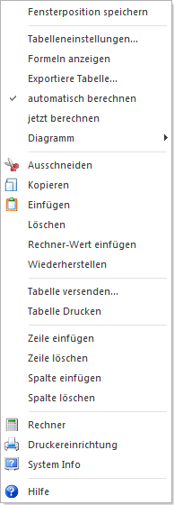
Ø Tabelleneinstellungen
Mit dieser Option können die Eigenschaften von Zellen verändert werden. Dabei können Einstellungen wie Schriftart, -größe, -farbe, die Hintergrundfarbe, die Zellenumrahmungen, die Ausrichtung und die Formatierung des Inhalts vorgenommen werden.
Ø Formel anzeigen
Wird diese Option aktiviert, werden in allen Zellen die Formeln angezeigt, die in den Zellen eingetragen wurden. Die Formeln werden so lange angezeigt, bis die Option wieder deaktiviert wird.
Ø Exportiere Tabelle
Mit dieser Funktion kann die Tabelle als XLS-Datei abgespeichert werden. Dabei kann ein beliebiges Verzeichnis ausgewählt werden, der Name der XLS-Datei ist ebenfalls frei definierbar.
Ø automatisch berechnen
Wird diese Option aktiviert, dann werden die Werte der Formeln beim Laden des MesoCalc-Formulars automatisch berechnet, was ggf. bei vielen Formeln länger dauern kann. Beleibt die Option deaktiviert, werden alle entsprechenden Formeln mit dem gespeicherten geladen, die Berechnung muss dann extra erfolgen.
Ø jetzt berechnen
Mit dieser Option werden alle Formeln im Formular gemäß den vorhandenen Einstellungen neu berechnet.
Ø Diagramm
Mit der Option Diagramm kann aus der Auswertung eine Grafik erzeugt werden. Dazu gibt es wieder mehrere Optionen:
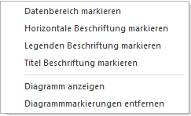
Ø Datenbereich markieren
Diese Option wird dann verwendet, wenn der Datenbereich, der Inhalt des Diagramms sein soll, markiert wurde. Das ist auch die Basis für die Ausgabe von Diagrammen. Wenn kein Datenbereich markiert wurde, dann wird auch kein Diagramm angezeigt.
Hinweis
Im Diagramm können max. 10 Datenfelder angezeigt werden.
Ø Horizontale Beschriftung markieren
Mit dieser Option kann ein Feld aus der MesoCalc-Tabelle als horizontale Beschriftung ausgewählt werden. Sinnvollerweise wird das die Bezeichnung des Wertes sein, der Inhalt des Diagramms ist.
Ø Legenden Beschriftung markieren
Mit dieser Option wird der markierte Bereich als Beschriftung der Legende verwendet. Im Normalfall wird dass die Bezeichnung der Datenbereiche sein. Auch hier können max. 10 Einträge angezeigt werden.
Ø Titel Beschriftung markieren
Mit dieser Option wird das aktive bzw. markierte Feld als Überschrift des Diagramms verwendet.
Hinweis
Alle Datenfelder, die für ein Diagramm markiert wurden, werden mit unterschiedlichen Farben (Grautönen) eingefärbt. Ggf. vorgenommene farbliche Anpassungen werden überschrieben.
Ø Diagramm anzeigen
Mit dieser Option wird das Diagramm entsprechend der Einstellung erstellt und angezeigt. Das Diagramm wird als Formular dargestellt und kann dementsprechend auch behandelt werden. D.h. das Diagramm kann gedruckt oder via Mail versendet werden.
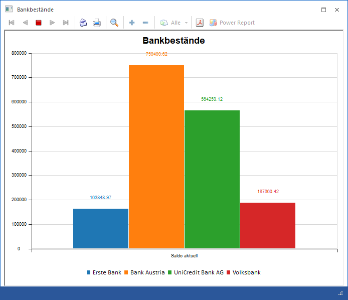
Das Diagramm kann aber auch angezeigt werden, wenn das Register "Diagramm" angeklickt wird:
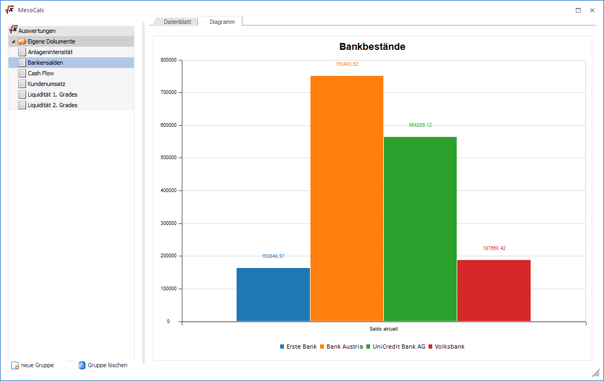
In beiden Diagrammansichten können über die rechte Maustaste weitere Funktionen abgerufen werden:
Ø Art der Grafik
Über rechte Maustaste kann die Art der Grafik gewählt werden. Standardmäßig wird die Balkengrafik dargestellt.
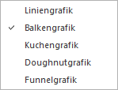
Ø Diagrammmarkierung entfernen
Mit dieser Option werden alle Diagrammmarkierungen entfernt. Damit werden dann auch alle farblichen Markierungen gelöscht. Vorher vorgenommen farbliche Anpassung sind somit auch nicht mehr vorhanden.
Ø Tabelle Versenden
Wenn am Arbeitsplatz ein Mail-Client installiert ist, dann kann mit dieser Option die Tabelle als Datei MAILEXCEL.XLS versendet werden. Nach Anwahl dieser Option wird eine neue Mailnachricht geöffnet, in der gleich die Tabelle als Anlage beigefügt wird.
Ø Tabelle drucken
Mit dieser Option kann die gesamte Tabelle ausgedruckt werden.
Ø Tabelle drucken (Selektion)
Es wird nicht die gesamte Tabelle, sondern nur der zuvor selektierte Bereich ausgedruckt.
Ø Zeile einfügen
Mit dieser Option kann eine neue Zeile eingefügt werden. Die neue Zeile wird oberhalb der aktuellen Position eingefügt.
Ø Zeile löschen
Mit dieser Option wir die aktuelle Zeile gelöscht.
Ø Spalte einfügen
Mit dieser Option kann eine neue Spalte (über alle Zeilen) eingefügt werden. Die aktuelle Spalte wird nach rechts verschoben.
Ø Spalte löschen
Mit dieser Option kann die aktuelle Spalte gelöscht werden.
Besonderheiten beim Aufruf dieses Fenster aus dem Menüpunkt "Reportdefinition"
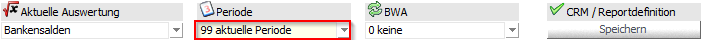
Ø Periode
In der Auswahllistbox steht auch der Eintrag "aktuelle Periode" zur Verfügung. Falls dieser Eintrag gewählt wurde, wird bei der Vorschau des Reports bzw. beim Erzeugen des Reports die Periode mit der Periode des aktuellen Systemdatums belegt.
Die Reportdefinition kann in weiterer Folge durch Anklicken des "Speichern"-Buttons im Bereich CRM / Reportdefinition gespeichert werden.